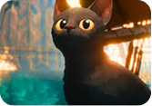
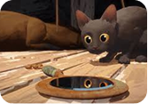
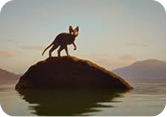
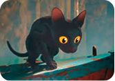
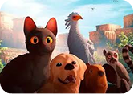
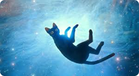
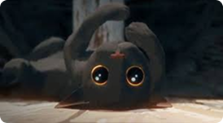
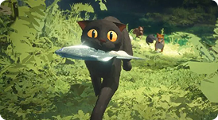
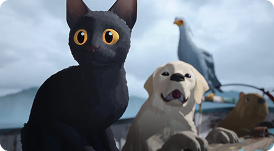

Solidão
Flow transmite a sensação de isolamento através da caminhada silenciosa.

Emoção
O gato expressa medo, curiosidade e esperança apenas com gestos sutis.

Um Mundo
O filme apresenta paisagens impressionantes vistas a partir da perspectiva baixa do gato.

Sem falas
Animação aposta na narrativa visual para emocionar.

Simplicidade
Visual minimalista e trilha sonora chamam atenção.

Amizades
Companheiros ajudam o gato a seguir em frente.

Um Gato Solitário em um Mundo Submerso
- E a história acompanha um gato que precisa sobreviver em um planeta tomado pela água.

Animação Realista Dá Vida ao Gato de Flow
- Os movimentos do gato foram animados com cuidado para reproduzir saltos, corridas e reações típicas de um felino real.

A Natureza Ameaçadora contra um Pequeno Gato
- A água constante se torna o maior desafio do filme, colocando o gato em situações que exigem agilidade e inteligência.
